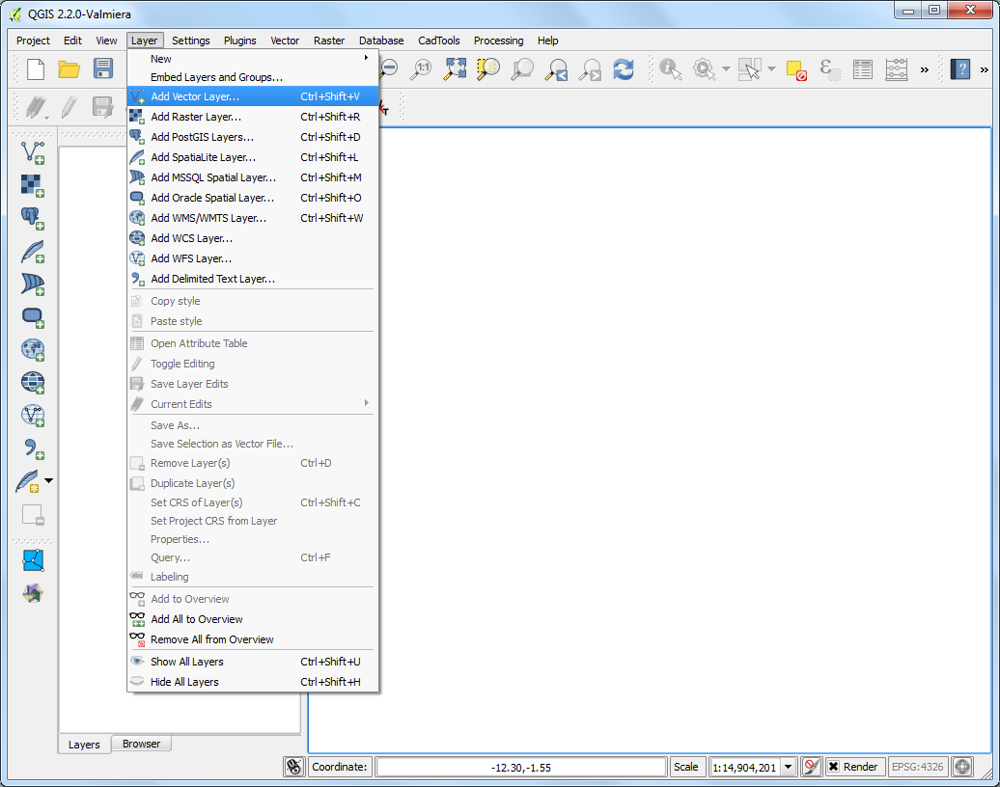
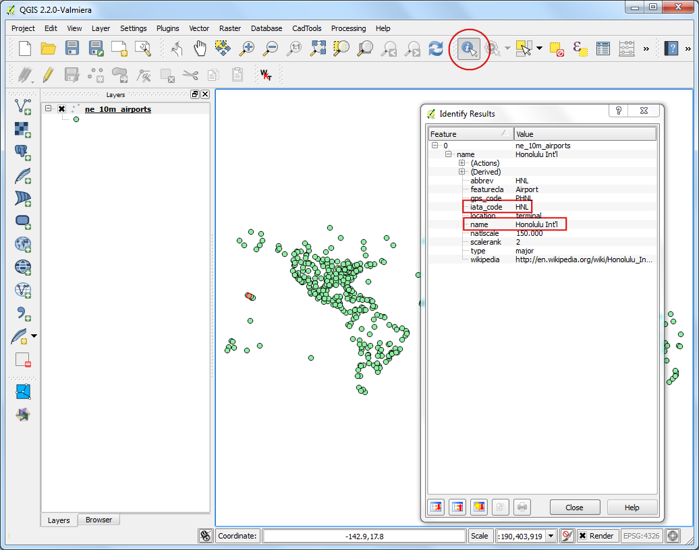
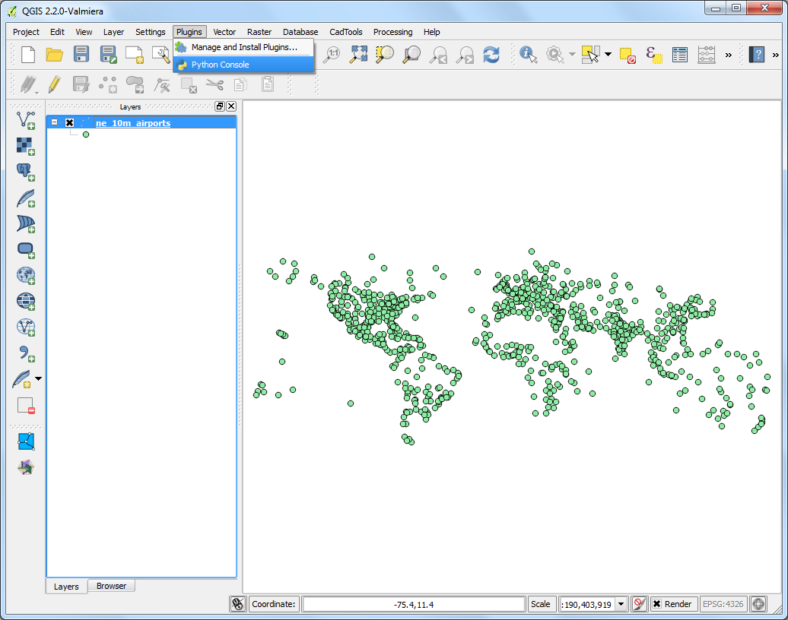
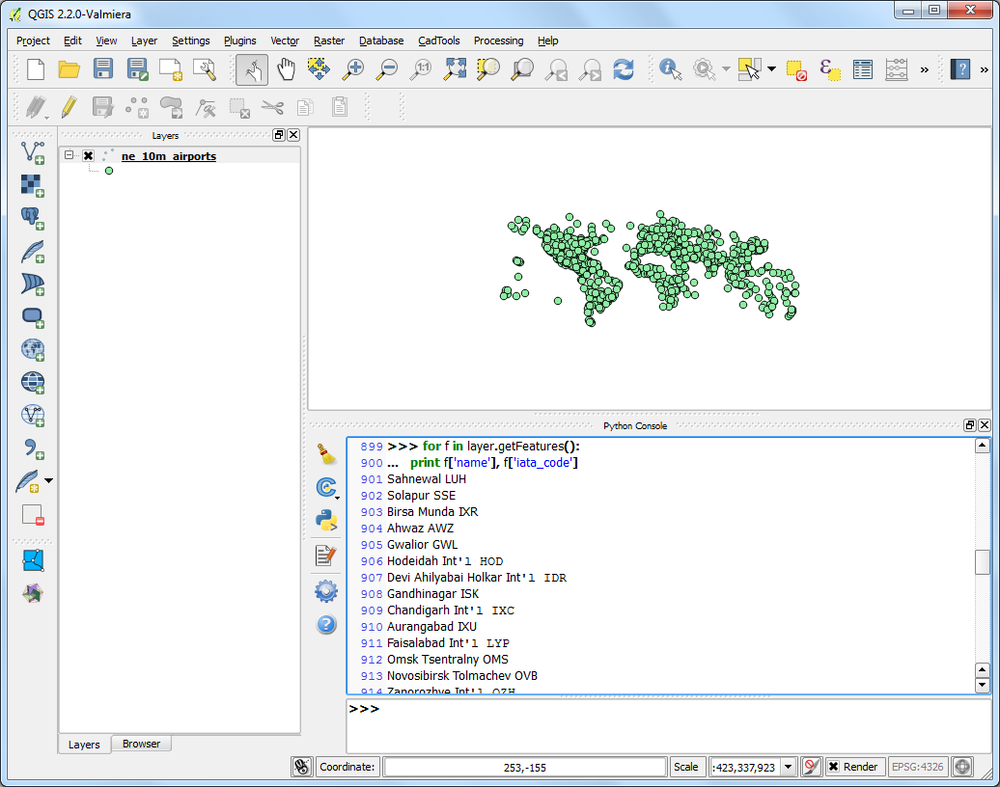
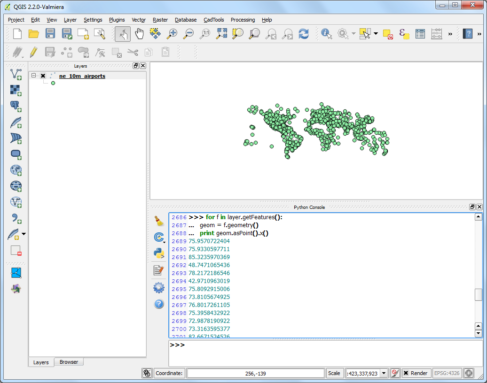
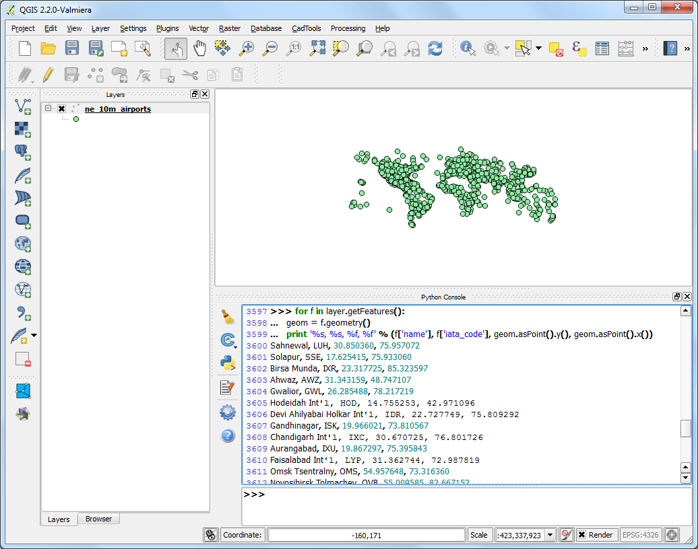

Memulai Pemrograman Phyton
QGIS memiliki sebuah antarmuka pemrograman yang ampuh sehingga kita bisa memperlebar fungsi inti dari software dan juga menulis skrip untuk otomasi pelaksanaan tugas. QGIS mendukung Bahasa skript Phyton yang terkenal. Walaupun anda seorang pemula, mempelajari sedikit phyton dan antarmuka Pemrogramman QGIS akan membuat anda jauh lebih produktif dalam pekerjaan anda. Tutorial ini mengasumsikan anda tanpa pengalaman pemrograman dan ditujukan untuk memberikan perkenalan pada scripting Python di QGIS (PyQGIS).
Tinjauan Tugas
Kita akan membjuka sebuah layer poin yang merepresentasikan semua airport besan dan menggunakan skript python untuk menghasilkan sebuah file teks dengan nama airport, kode airport, garis lintang dan garis bujur untuk setiap airport pada layer.
Prosedur
Dalam QGIS, akses . Jelajah ke file ne_10m_airports.zip yang sudah terunduh dan klik ne_10m_airports.zip . Pilih layer ne_10m_airports.shp dan klik OK.

Anda akan melihat layer ne_10m_airports terbuka di QGIS

Pilih tool Identify dan klik pada poin mana saja untuk memeriksa attribut yang tersedia. Anda akan melihat bahwa nama airport dan 3 digit kode didalamnya adalah attribut name dan iata_code secara berurutan

QGIS menyediakan konsol built-in dimana anda bisa mengetik command phyton dan mendapatkan hasilnya. Konsol ini merupakan cara yang sangat baik untuk belajar scripting dan juga melakukan proses data cepat. Buka Python Console dengan mengakses .

Anda akan melihat sebuah panel baru di bawah kanvas QGIS. Anda akan melihat sebuah tanda seperti >>> di bawah dimana anda dapat mengetik command. Untuk interaksi dengan environment QGIS, anda harus menggunakan variabel iface . Untuk mengakses layer yang sedang aktif di QGIS, anda dapat mengetik sebagai berikut dan tekan iface . Command ini menarik referensi ke layer yang sedang dibuka dan menyimpannya sebagai variabel layer.
layer = iface.activeLayer()

Ada function berguna yang disebut dir() di phyton yang menunjukkan anda semua metode yang tersedia untuk objek mana saja. Ini berguna ketika anda tidak yakin function mana yang tersedia untuk obyek tertentu. Jalankan command berikut dan lihat operasi apa yang bisa kita lakukan pada variabel layer .

Anda akan melihat sebuah daftar panjang dari function yang tersedia. Untuk sekarang, kita akan menggunakan sebuah fungsi bernama getFeatures() dimana akan memberikan anda referensi untuk semua fitur pada sebuah layer. Pada kasus kita, setiap fitur akan menjadi sebuah poin yang merepresentasikan airport. Anda dapat mengetik command untuk memgiterasi melalui setiap fitur pada layer yang sedang aktif. Pastikan untuk menambah 2 spasi sebelum mengetik garis kedua.
for f in layer.getFeatures():
print f

Seperti yang anda lihat di output, setiap garis mengandung sebuah referensi ke sebuah fitur di layer. Referensi ke fitur disimpan dalam variabel f . Kita dapat menggunakan variabel f``untuk mengakses attribut pada setiap fitur. Ketik sebagai berikut untuk mencetak ``name dan iata_code untuk setiap fitur airport.
for f in layer.getFeatures():
print f['name'], f['iata_code']

Jadi sekarang anda tahu bagaimana secara programatik mengakses attribut dari seitap fitur di layer. Sekarang, mari kita lihat bagaimana mengakses koordinat fitur. Koordinat dari sebuah fitur vektor dapat diakses dengan memanggil function geometry() . Function ini memberikan sebuah obyek geometri yang dapat kita simpan pada variable geom . Anda dapat menjalankan function asPoint() pada obyek geometri untuk mendapatkan koordinat x dan y poin tersebut. Jika fitur anda adalah sebuah garis atau sebuah poligon, anda dapat menggunakan fungsi asPolyline() atau asPolygon(). Ketik Kode berikut pada prompt dan tekan Enter untuk melihat koordinat x dan y dari setiap fitur.
for f in layer.getFeatures():
geom = f.geometry()
print geom.asPoint()

Bagaimana jika kita hanya ingin mendapatkan koordinat x dari fitur ? Anda dapat memanggil fungsi x() pada obyek poin dan mendapatkan koordinat x nya.
for f in layer.getFeatures():
geom = f.geometry()
print geom.asPoint().x()

Sekarang kita mempunyai semua kepingan yang akan kita satukan untuk menghasilkan output yang kita inginkan. Ketik kode berikut untuk mencetak name, iata_code, latitude dan longitude dari setiap fitur airport. Notasi %s dan %f adalah cara untuk memformat sebuah variabel string dan numerik
for f in layer.getFeatures():
geom = f.geometry()
print '%s, %s, %f, %f' % (f['name'], f['iata_code'],
geom.asPoint().y(), geom.asPoint().x())

Anda dapat melihat outpu tercetak pada konsol. Sebuah cara yang lebih berguna untuk menyimpan output adalah dengan sebuah file. Anda dapat mengetik kode berikut untuk membuat sebuah file dan menulis outputnya di sana, Ganti path atau alamat file dengan sebuah path dalam sistem anda sendiri. Catat bahwa kita menambahkan \n di akhir baris. Ini untuk menambah sebuah garis baru setelah kita menambahkan data untuk setiap fitur. Anda seharusnya juga memperhatikan garis unicode_line = line.encode('utf-8') . Karena layer kita mengandung sejumlah fitur dengan karakter unicode, kita tidak bisa begitu saja menulisnya ke dalam file teks. Kita encode teks menggunakan UTF-8 encoding dan kemudian menulis file teks tersebut.
output_file = open('c:/Users/Ujaval/Desktop/airports.txt', 'w')
for f in layer.getFeatures():
geom = f.geometry()
line = '%s, %s, %f, %f\n' % (f['name'], f['iata_code'],
geom.asPoint().y(), geom.asPoint().x())
unicode_line = line.encode('utf-8')
output_file.write(unicode_line)
output_file.close()

Anda dapat mengakses lokasi file output yang sudah ditentukan dan membuka file teks. Anda akan melihat data dari shapefile airport yang kita ekstraksi menggunakan skripting phyton.